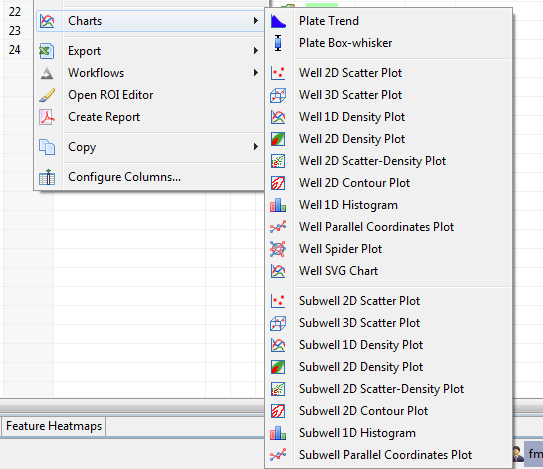
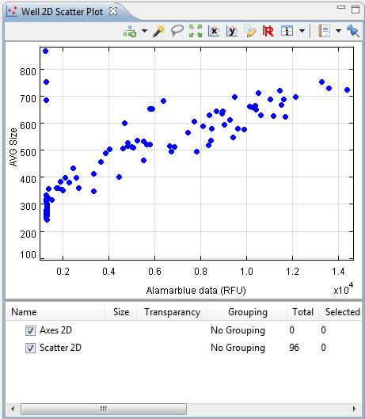
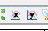
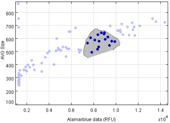
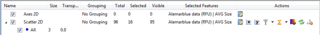

Phaedra contains an advanced charting component, which allows you to create plots of almost any data in various types of one-, two- or three-dimensional charts:
In addition, these charts are layered, which means you can add multiple plots on top of each other. For example, you can make a density plot of an experiment's sample wells, and add a scatter plot on top that highlights the experiment's high control wells.
Beyond that, charts can be configured in great detail. The most important settings are described in this topic.
To create a chart, the first step is to open a Chart View on a selection of data. Right-click on a selection of plates or wells, and select one of the available chart types.

As you can see, there are 3 categories of charts:
For example, to view the correlation between two well features in a plate, select the plate and open a Well 2D Scatter Plot.

Each blue dot represents one well of the selected plate. To select the features that should be plotted, use the X and Y buttons in the view's toolbar.

All charts are interactive, which means you can select wells in the chart by holding down the mouse button and drawing a circle around the items you want to select.

If another view on the same plate is open (for example, a heatmap), the selection will be highlighted there. To clear a selection, simply click somewhere in the chart area.
Below the plot, the chart legend is displayed. This legend contains a lot of information, and allows you to change many chart settings as well. For a full description of these settings, refer to the topic Chart Views.
The most important settings are explained below.

The legend will contain one row for each chart layer. You can hide a layer by unchecking the corresponding row.
In addition, if data has been grouped, one row per group will be listed. To change the grouping method (by compound, by plate, etc), click on the "No Grouping" item in the Grouping column and select a method from the list.
To change the symbol size of a group, click on the number in the Size column and enter a new value.
Other, advanced settings can be accessed via the buttons in the Actions column.